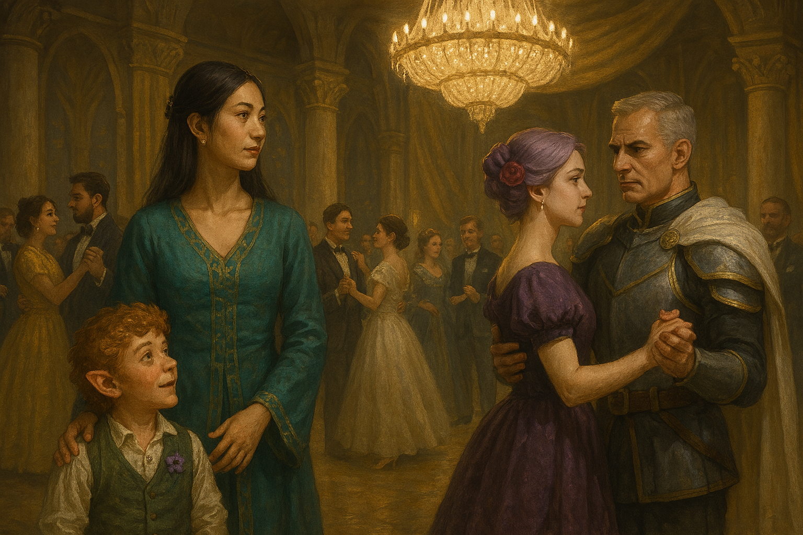

Chapter 3: Upper Class Life
The Blooming of Macksohn


The Blooming of Macksohn
15048.11.10
日出，住在雙人房的YHWH和帕拉丁在反覆起床幾次後，最終決定繼續昏頭大睡。
薩梅爾在睡醒後等待還在熟睡的酷爆，繼續待在房間內。
早起的米多莉在大廳坐著等待大家，唯一等到的是龍恩。兩人走到旅店外的噴水池旁談天，後來決定趁早到王宮附近繞繞。
來到王宮花園的入口，兩人思索著要不要進去。花園內盡是打扮華貴的貴族，穿著簡單的龍恩只好跟在正裝的米多莉身後，悄悄進入花園。
米多莉一進入花園，便與一名年輕女子對上眼。對方自我介紹為蘿琳，是休斯家族的新任掌門人。他也介紹自己家族是經商的。米多莉則自稱是來自方努爾市的米多莉。簡單探聽後，米多莉得知比武大賽的參賽者似乎會被先帶去進行「處理」後才會進入會場。而貴族們則會從花園深處緊鎖的大門進入，逐步往下，進入一個地下空間，觀賞比賽。在龍恩感到花園內各種華麗穿著的人們讓他感到的格格不入後，米多莉和龍恩兩人便和蘿琳道別，而蘿琳也很期待在隔天柏納斯家的晚宴與米多莉再次相見。
離開花園後，米多莉和龍恩兩人躲到角落，盤算著繞著王宮，進行探索，卻遠遠的看見弗列里爵士夫妻從花園門口走出，朝著市集走去。在討論後，米多莉和龍恩前去和爵士夫妻會面。在四人拉到旁邊私下談話中，他們得知爵士夫妻在冒險團被衛兵抓走的那天似乎因為有別的重要事情而不在家，甚至連衛兵來到寇林菲爾德他們都不知情。不過在大家消失後，弗列里爵士有和馬格努斯爵士打聽了一下消息，但馬格努斯爵士似乎沒有告知弗列里爵士關於大家前往麥克嵩一事。大家談到麥克嵩的紫羅蘭是帕拉丁的生母一事時，弗列里爵士似乎早已知情，而羅莎夫人則完全不知道。在米多莉的請託下，爵士答應會嘗試在明晚的晚宴上為大家和紫羅蘭牽線，也會幫忙打聽家亨的下落，不過爵士也告知米多莉和龍恩，家亨很有可能狀況很糟，回不到從前的樣子了。另外，爵士也告訴米多莉他剛才認識的休斯家族是與外地交易稀有材料的家族，過去的掌門人應是弗列德・休斯。
在與爵士夫婦道別後，龍恩便前往日出酒館去了。龍恩進到日出酒館時，看見門邊的葛蘭，告知他自己決定離開日出酒館，去別的店工作，但是有需要可以到他在白磚石的房間找他談事。說到一半，龍恩發現忙不來的法蘭奇從廚房走了出來。龍恩落下了狠話，表明自己要離開了，便快速離開。
同時，米多莉回到了白磚石。在大廳等待夥伴們的他與櫃檯兩名服務生克拉克與凱斯談天。米多莉打聽了一下關於斯坦芬諾的消息，他似乎是個很得客人心的酒保。另外米多莉也詢問了關於曾經從城門旅店老闆凱文那打聽到，能詢問情報的神秘地址。凱斯表示自己曾經去過，花了點錢，問到了自己想知道的事情，似乎十分滿意。凱斯說他下午兩點左右輪班，可以帶米多莉去，但米多莉因為上次去的經驗不好，似乎想要讓凱斯帶自己的夥伴過去，同時大家也約好了中午要一起練團，時間上也很難搭配。
在米多莉與凱斯的談話過程中，薩梅爾出現了，強烈地吸引了凱斯的注意力。像個小腦粉似的，凱斯充分表達了對薩梅爾的興趣，但在米多莉推薦凱斯可以帶薩梅爾去能詢問情報的地方後，薩梅爾一樣以練團的時程而婉拒了。
米多莉與薩梅爾一同到樓上敲了敲帕拉丁和YHWH的房門，好一段時間，兩人終於起床。簡單梳洗準備好後，大家一起到一樓大廳，直到布拉克出現，大家便一同前往派頓先去找月先生。月先生陪同著大家一起來到柏納斯宅邸，經過同意，僕人引導大家到了前一天大家參觀的宴會廳練團。
離開日出酒館後，龍恩回到了王宮花園，躡手躡腳的翻過了花園的圍籬，喬裝成要尋找遺失的鑰匙，趁機跑去調查從蘿琳那兒打聽，進入比武大會比賽會場的入口，卻發現因為難以調查，只好作罷。
在廣場市集，龍恩簡單吃了個沙威瑪後，便前往市集外圍的比武大賽報名處。經過詢問後，龍恩得知了比武大賽的冠軍將被賜予爵位，甚至會有領土，心動的他決定以「尖頂寺的龍恩」為名報名了。
回到白磚石後，龍恩在自己房間門縫發現了一張紙條，是櫃台留下的，表示有位醫生曾來找過他，晚點會再來一趟。龍恩便決定到大廳打坐，等待大衛醫師。等了不知道多久，大衛醫師終於來到，兩人在龍恩房間簡單討論後，便出發了。
在大家討論下，荒野旋律最終決定彈奏幾首曲子：《麥丁頓之聲》（布拉克表示這是在麥克嵩常聽到的曲子，甚至在整個麥丁頓王國都能常常聽到）、前一天在劇場學習的社交舞曲、《麥克嵩的紫羅蘭》（帕拉丁憶起他父親在他小時候常唱給他聽的歌，經布拉克確認後，才知道曲名），以及改編自薩梅爾將冒險團冒險過程集結而成的史詩《沃瓦倫之歌》。在充分練習與月先生的肯定下，大家便收工，到派頓拿了自己的物品後便離開了。
在布拉克的帶領下，大家來到了距離日出酒館不遠的一家小酒館黃昏酒館。布拉克表示這是他過去曾經演奏過的地方，因此想讓大家認識一下，不過食物和酒不怎麼好吃。大家聽著舞台上魯特琴自彈自唱的男子，喝著酒，不自覺地發現角落坐著個披著黑色斗篷的男子，目光直盯著大家。米多莉和YHWH決定先到酒館正門口堵住，薩梅爾、帕拉丁和布拉克三人則慢慢朝向那人走去，但在距離那人一桌的距離時，布拉克卻突然揮出雙拳，幸好薩梅爾和帕拉丁即時閃過。帕拉丁疾步向前，卻發現斗篷男子竟然如幻象般的消失了，而酒館的後門也被悄悄推開，隨即關上。布拉克則突然一個踉蹌，趴倒昏迷在地。眾人趕緊向酒館的工作人員求助，彈奏魯特琴的男子自願去找醫生過來。布拉克透過心靈感應，告訴帕拉丁不要理他，他們還有更重要的事要做。在醫生來到店內後，確認布拉克身上沒有明顯外傷，但身體冰冷。眾人決議將布拉克搬到醫生的診間。
薩梅爾和YHWH留下來守護布拉克，米多莉和帕拉丁則先回白磚石休息，醫生也先行離去。守夜過程中，YHWH感應到診所的門外似乎有股異樣的魔力，於是他向門外射了三發魔法飛彈，打穿了木門，好像也擊中了什麼。YHWH也發現布拉克的眼睛似乎有辦法張開，因此簡單的問了他狀況是否還穩定。換班給薩梅爾守夜時，也沒有發生任何怪異的事。
在崔尼斯劇院附近，龍恩和大衛醫師停在了一間天藍色調的餐廳門口，店名是艾德蒙餐酒館。龍恩回想起曾經在魏斯科見過這間餐廳。大衛醫師表示魏斯科的是本店，這裡的是分店。兩人享用了店內的餐點後，便在服務生的帶領下到了廚房後的一間小小會客室，與店長路易斯簡單談話。路易斯在簡單了解了龍恩的背景後，便帶龍恩逛了一下廚房，接著表示在關店前，再請龍恩來廚房試個手藝，順利的話，明日就可以上工。
因為時間還早，龍恩離開餐廳後，先到了崔尼斯劇院逛逛。售票亭目前沒有人，龍恩便和售票亭的工作人員詢問了關於比武大會的細節，確認了大會是由王宮主辦，貴族基本上不插手。另外，工作人員也推薦了龍恩明天晚上七點有個外地來的特技表演：賽門雜技團，歡迎他來觀賞。他表示自己叫納撒尼爾，明天購票時報上他的名字，可以有點優惠。
離開劇院後，龍恩在街上尋找外地來的潛在比武大會選手，想打聽點消息。他看見了一名壯碩的半獸人，便前往搭話。半獸人買了杯啤酒給龍恩，兩人閒聊起來。他表示自己的名字叫巨斧葛雷格力，過去幾年都有來參加比武大會，十分喜歡。葛雷格力讓龍恩使力在他的胸膛揍了一拳，認定十分有力。葛雷格力也拿出他掛在身後的斧頭，讓龍恩拿拿看，龍恩卻在接手後因為斧頭太重而蹲坐在地上。葛雷格力說明這把斧頭叫「磁鐵」，已經準備好在比武大會上好好展現了。龍恩向葛雷格力詢問未來可以去哪裡找他，葛雷格力則表示自己今天剛到，還沒找好旅店，但過去幾次來這裡都是住一家布蘭登的角落。
和葛雷格力簡單道別後，龍恩看見了一個熟悉的身影，希納。他前去打了個招呼，希納與身邊的碧翠絲也十分友善。希納提到了會去參加明日柏納斯家的宴會，而他現在似乎也過得很好，打算在麥克嵩度過他的下半輩子了。在龍恩眼中，希納似乎已經真的像個貴族一樣了。
時間晚了，龍恩回到艾德蒙餐酒館，在店員的協助下來到了路易斯辦公室外。龍恩清楚地聽見了大衛醫師和路易斯的談話，大衛醫師表示雖然肯定龍恩的能力，但日出酒館在他來了後便發生了大事，著實讓他有點不好的預兆。路易斯也表示自己有點擔心，但又不好意思這樣讓龍恩沒有機會來工作。門外的龍恩對此陷入了沉思，也不方便直接打擾辦公室內的兩位。
進入辦公室後，龍恩向大衛醫師和路易斯表示自己也許不適合這份工作，打算放棄這個機會，但是在兩人的考慮下，最後還是邀請龍恩幫一個忙：隔天餐廳有要在柏納斯家族的晚宴提供餐點，路易斯便邀請龍恩一起將餐點運送到柏納斯宅邸，並在晚宴上協助擔任服務生。
離開艾德蒙餐酒館後，龍恩有些失落，但又還算平靜，大衛醫師伴著他，一路默默走回白磚石。
15048.11.11
凌晨，米多莉和帕拉丁休息足夠後，便從白磚石出發往診所交班。米多莉陪著薩梅爾回了白磚石一趟，將身上的物品備齊，也帶上還在熟睡中的酷爆。診所內的帕拉丁也用椅子將門口堵住，以防有人闖入。回到診所門口，薩梅爾撿到了一塊黑色的碎布，但沒有概念這是什麼東西，因此只能先收著。
天亮後，醫生回到診所，布拉克一樣癱瘓，因此眾人決定先將他帶到派頓，尋求月先生的協助。醫生提供了他們一個簡易擔架，而米多莉也給了醫生一枚金幣作為答謝。
月先生在見到荒野旋律後，決定帶大家去布拉克的家。大家扛著擔架，走到了城市較貧窮的區域。月先生在其中一間房子敲了敲門，一名中老年的半獸人女子開了門，引了大家進入。布拉克的父母瞭解了布拉克的現況後也感到無能為力，月先生則從腰際掏出了一個大布袋，交給他們，裡面似乎是錢幣。月先生表示希望能讓他們生活過得好一些。布拉克的父親也提前祝荒野旋律今日的表演順利。
龍恩一早便決定出發前往之前聽說的神秘小黑屋打聽消息。按照地址，他找到了一間破舊的小屋子，也隨著光源走到了地下室。辦公桌前披著斗篷的身影似乎等待著龍恩的到來。龍恩掏出了10枚金幣，詢問了日出酒館的前老闆喬納森現在的去處，得到了「喬納森現在已經不在麥克嵩了」的回應，他又掏出1枚金幣，想詢問更細節的地點，卻得到了模糊的答案，因此作罷，離開了房子，在城門口買了沙威瑪後，便回白磚石休息。
月先生帶著大家回到昨日事發的黃昏酒館用餐，簡單了解事發狀況。薩梅爾掏出在診所門口發現的破布，月先生則提到王宮內有一座圖書館，也許可以去查查資料。
在月先生的帶領下，大家來到了王宮花園深處圖書館的入口。兩名守衛詢問大家是哪裡來的，米多莉表示YHWH是來自陶拉里亞大學院的泰教授，其他人則是他的助理，泰教授是研究音樂的學者，要來這裡查閱資料。經過討論後，守衛決定讓大家進入。
在圖書館內，花了一些時間，大家針對撿到的黑布，從各種方向探索，最終得知這種可以隱形的黑色布料，是取下一種叫「拉茲特獸」身上的毛皮，泡水後用拉索斯語的咒語製成的布料。雖然線索有限，但至少大家知道這東西確實和拉索斯教有所關聯。
離開圖書館後，月先生表示他要再去見一下布拉克的父母，而冒險團則出發前往柏納斯宅邸。在柏納斯僕人的帶領下，大家回到了宴會廳開始準備練習，同時宅邸內的僕人們也已經在準備宴會的食物了。在大家調音時，發現另外一個樂團的人也來了。荒野旋律的團員們率先演奏了麥克嵩的社交舞曲，另一個樂團則回敬了一首他們沒聽過的樂曲，十分好聽。兩團互相打了招呼。這個樂團叫「林中之聲」，有四名團員，都是人類，包含主唱團長托尼、打擊樂手加百列、魯特琴手山謬，以及另一名魯特琴手達妮莎。
在經過多次練習後，荒野旋律決定先休息一下。宅邸的僕人也向樂團告知，今晚會請他們演奏到社交舞的舞曲，下半段會交給林中之聲樂團，而荒野旋律便可四處逛逛。薩梅爾偷偷觀察了林中之聲的團體互動，發現團長托尼似乎有在刻意向團內的兩名女團員加百列以及達妮莎調情，而剩下的男團員山謬好像很不是滋味。
下午時間，龍恩回到了艾德蒙餐酒館。路易斯向他介紹了其中一名壯碩的員工麥可，麥可也帶領著龍恩開始準備把餐點向外搬運。艾德蒙餐酒館的員工花了不少時間，終於把餐點都送到柏納斯宅邸，並從後門的通道將餐點都送進宴會廳內。利用最後的時間，大家簡單休息後，便換裝準備迎接賓客。
在賓客入場前，荒野旋律便開始演奏。陸陸續續，有來自各方的貴族人士來到會場，談天、喝酒，吃著美食。眾人從遠方看見了希納的身影，帕拉丁決定放下樂器，從人群中鑽了過去找希納對峙，卻遭到希納假裝不認識，於是喪氣的回到了樂團繼續表演。
另一方面，龍恩端著裝滿點心的托盤，為貴族們送上點心。他從遠方看見了蘿琳，也將餐點送了過去。後來龍恩也見到了弗列里爵士夫婦，以及希納和碧翠絲。經過對談，龍恩得知碧翠絲是麥克嵩的貴族家庭伊登家的繼承人。
在彈奏了《沃瓦倫之歌》後，荒野旋律前站滿了觀眾，大家對於這首沒聽過的歌曲十分有興趣。一名自稱是法朗茲的吟遊詩人好奇地向樂團請教，也希望能將這首歌的故事改編成自己的曲子，四處表演。薩梅爾也和法朗茲約定好在宴會結束後找機會到酒館好好聊聊。
在法朗茲離開樂團後，一名身穿正裝的男子找上了他。他自稱是拉芬奇（實為喬裝的沙度），在麥克嵩經營各種事務的專業人士，希望能邀請法朗茲和荒野旋律合作，一起在幾天後的比武大會上演出。他伸出他的手，大力的和法朗茲握手，似乎有點讓法朗茲嚇著了。法朗茲表示自己再想想，有機會也許可以合作。
蘿琳來到了樂團前，見到米多莉非常開心。米多莉藉此暫時離開樂團，和蘿琳四處晃晃。
在團長薩梅爾的決議下，樂團剩餘的成員決定開始演奏起社交舞曲。隨著音樂響起，不少貴賓來到了會場中間，雙雙跳起了社交舞。米多莉和蘿琳也配對了起來，十分開心。（拉芬奇自己在舞池角落獨自跳起了舞蹈，不過似乎沒有人在注意他。）而在交換舞伴後，米多莉便離開了新配對到的陌生男子，回到了樂團中。
在舞曲進行一段時間後，門口響起了敲杯子的聲音。大門敞開，柏納斯一家，包含傑弗瑞、歐娜、蘭斯，以及瑟琳都走入了會場。跟在他們身後的，是穿著華貴紫衣的紫羅蘭，以及一名穿著軍裝的壯碩男子，護衛著他。荒野旋律隨即改演奏了《麥克嵩的紫羅蘭》，試圖引起紫羅蘭的興趣。然而，此刻會場一半的人靠了過來聆聽，另一半的人則朝向紫羅蘭的方向湧去。
在樂曲結束後，拉芬奇朝荒野旋律靠了過去，想邀請他們參與表演。在薩梅爾試圖推託的過程中，整個下午都沒出現的月先生用了抓了拉芬奇的肩膀，表示自己是荒野旋律的經紀人。他將拉芬奇拖到一旁，語帶威脅地要他不准動他的客戶。慌忙離開的拉芬奇逃往男廁，花了些時間喬裝成一名年輕女子後，便從廁所鑽了出來。
另一方面，隨著林中之聲接替演出，荒野旋律的團員們也下了崗，先到廁所簡單清洗後便回到宴會場。會場內，他們看見弗列里爵士夫婦正在一旁談天，思索著要不要去打個招呼。
眾人決定去觀賞林中之聲的演奏。然而，有個熟悉的身影邁向米多莉，並搭著了他的肩，是城門旅店的凱文・波頓。他先向米多莉道了歉，並表示自己有點東西要給米多莉。首先，他拿出了條手帕，上面有米多莉熟悉的護盾符號，也就是津菈教的符號。手帕上還有糊掉的墨水字跡，那字跡米多莉似乎很久、很久以前見過，在和這群夥伴見面前就認得的字跡。另外，凱文又掏出了一個項鍊，中間掛著一顆像是珍珠的寶石。米多莉收下並戴上後，凱文才表示這是他家裡的珍寶之一，請米多莉別太在意。接著，凱文便瀟灑的離去了。眾人也繼續前往他們原本的目標前進：林中之聲的演奏。
一名麥克嵩當地的貴族也來到了會場。外貌十分帥氣的澤維爾雖然不清楚自己是怎麼來到這裡的，但他似乎十分喜歡這個地方。滿滿的人，滿滿的食物，滿滿的……新奇。看著樂團演奏，好奇的澤維爾站在樂團的正前方，距離主唱不到30公分的距離。他開心地跟著哼著歌，詢問著各種樂器，但樂團似乎不太想理會他。在失去興致後，澤維爾便跑到了食物區。
端著餐盤的龍恩走向了紫羅蘭以及將軍，就近觀察了一下兩人。兩人拿走了點心後，龍恩便離開了。
YHWH在窗邊找到了月先生，簡單聊了天後，兩人一起去拿了幾杯酒。YHWH向月先生問起了關於月神教的問題，而月先生表示帕拉丁左耳留下的印記聽說是可以消除的，但是他不認識有誰有這樣的能力。另外，他也表示自己的教派是屬於月神教中較為溫和的教派，只想融入人群之中，沒有想要高調過生活。
見過了林中之聲的團長托尼似乎對女團員不太禮貌的行為後，「渣男殺手」薩梅爾和夥伴們決定行使他們心中的正義。和歸來的YHWH簡單討論好計策後，YHWH在樂團結束一首樂曲後，在托尼旁邊利用幻象製造了一個年輕的金髮美女貴族，對著托尼拋媚眼，勾引他離開。托尼馬上就拋下了他的團員們，喊著中場休息，並跟著「女子」走了。利用這個機會，薩梅爾透過音樂盒蠱惑了托尼，告訴他有個美麗的女子名為紫羅蘭，想邀請托尼去認識認識。盲目的托尼順著薩梅爾的引導，走向了會場另一側的紫羅蘭。他大方的伸出他的手，邀請紫羅蘭共舞，態度十分不敬。紫羅蘭皺眉問他是誰，他則表示自己是托尼，T、O、N、Y。紫羅蘭似乎十分不屑，轉身想離去，身邊的將軍則將自己擋在紫羅蘭與托尼之間。薩梅爾慫恿托尼繼續追求，而像個醉漢一樣的托尼追了上去，被跟在後方的YHWH電擊了兩下，便跪倒在地。將軍便指示了傭人將他抬離會場。
此時，米多莉回到了林中之聲的樂團前，和剩下的團員談天。他表示自己可以充當原本托尼的位置，而且他也有首歌，似乎是現場有個觀眾想點播，送給會場的某位龍人聽的。於是米多莉便拿起他的提琴，演唱了「龍寶貝」。雖然風格和其他曲子不太一樣，但觀眾們似乎也還挺捧場的。
終於有了可以和紫羅蘭對話的機會。薩梅爾和YHWH簡單和紫羅蘭互相介紹了自己，也得知身邊的將軍便是柏納斯家的長子葛瑞斯・柏納斯，現在擔任王宮禁衛軍的隊長，也就是弗列里爵士的繼承者。接著，兩人便把身後的帕拉丁推了出來。看見帕拉丁，紫羅蘭臉色有了點變化。前幾天他才在城門口見到了這名號稱是他兒子的半身人，怎麼現在又到了這會場？帕拉丁支支吾吾，試著想證明自己是紫羅蘭的兒子，卻又想不出什麼證據。在薩梅爾靈機一動下，決定去請弗列里爵士與夫人前來解圍。
此時，一旁一名將帽緣壓得很低的奇異男子向柏納斯將軍靠了過來，打了聲招呼，表是自己是從遠方城市來的一名貴族，名叫潘尼克。接著，他微微掀起帽子，露出他的短角，似乎引起了柏納斯將軍的好奇心。神秘的尼克笑了笑，便和將軍揮手道別，繼續在人群中觀察這齣好戲。
弗列里爵士和夫人隨著薩梅爾與YHWH的陪伴來到了現場。弗列里爵士向紫羅蘭說明了自己確信帕拉丁是馬格努斯爵士的孩子，而就算紫羅蘭不相信帕拉丁是他的兒子，也不要錯怪善良的帕拉丁。看見紫羅蘭似乎還是沒有完全確認，弗列里爵士將他拉到一旁，好像開始了有點激烈的爭辯。
看著爵士和紫羅蘭爭辯中，薩梅爾等人試著和柏納斯將軍搭話，詢問了弗列里爵士擔任禁衛隊隊長時期的事，包含了帕拉丁的父親，當時的副隊長馬格努斯爵士當時是怎麼會被退役的。柏納斯將軍表示，馬格努斯爵士在巡邏時被一群暴徒襲擊，腳似乎就廢了。爵士夫人看見爵士爭論得有點久，決定去關心一下，便把討論結束的兩人帶了回來。
弗列里爵士語重心長地看著帕拉丁，說道，為了帕拉丁，他放棄了自己的爵位，作為交涉，讓紫羅蘭承認帕拉丁是自己的兒子。雖然不清楚這「交易」是怎麼進行的，帕拉丁也點了點頭接受了。和大家點頭致意後，弗列里爵士便瀟灑地拉著他太太的手，離開了會場。
帕拉丁看著自己的母親，尷尬卻不失禮節的詢問了未來自己該如何稱呼他？紫羅蘭表示叫他媽媽、母親都好，但他也表示自己可以幫到他，卻不一定能幫到他的夥伴。帕拉丁也向紫羅蘭詢問了能否解救他的夥伴家亨？紫羅蘭表示自己對「沃瓦倫的惡魔」這名號其實沒有很在意，但如果要救被關在獄中的家亨，得直接去找國王，從他這裡沒辦法解決這件事。經過帕拉丁的詢問，紫羅蘭從禮服取下了一個紫羅蘭造型的別針，別在帕拉丁的胸前，像個護身符，也像個識別一樣。最後，紫羅蘭表示要帕拉丁好好享受今晚的派對，便離去了。
美食區內，好奇的澤維爾看見了一大缸的牛排，準備整缸端走，遭到了剛好在旁邊的龍恩制止。龍恩一步一步教導似乎沒什麼生活能力的澤維爾要用盤子一次裝一份牛排，而不是一次拿走一缸。澤維爾似乎理解了，便拿了一份牛排開始享用。接著，他看見了旁邊還有生菜，便拿了些生菜，擦拭自己滿是牛排醬汁的臉。不久後，看見一旁各式的酒類，澤維爾索性用他的指頭挖了挖酒來喝，味道似乎和想像中的不太一樣，有點……鹹？各種口味挖過後，他才意識到似乎是自己手上的牛排醬汁味道染到了酒內。
「喝」了酒後的澤維爾拿起盤子開始裝點心。一個、一個裝上去，他沒有注意到點心已經多到要裝不下了。隨著掉落的點心，他想接住，卻掉了更多點心在地上，於是他便索性的坐在地上開始吃點心。吃到一半，肚子感覺飽了，澤維爾站起身來卻覺得肚子發出奇怪的叫聲。是上廁所的時間了。離開宴會廳，澤維爾忘記廁所在哪一側，向右手邊走，一路走到底，卻發現那邊是出口。回頭走，經過會場入口，他想了想，自己剛剛為什麼要走出會場？於是他便走回了宴會內，肚子的不適似乎忍了下來。他終究沒走到廁所內。
拿著托盤，龍恩再次見到了蘿琳。蘿琳開玩笑地詢問龍恩和米多莉之間的關係，以及米多莉是否有男友或老公。龍恩似乎隱約的察覺了蘿琳些微的情愫，表示米多莉似乎有非常在意的人，但是他並不清楚。接著他便拉蘿琳一起去找米多莉。
在林中之聲前，米多莉遇見了一名金髮女子，並介紹自己為勒安姆斯・賈布朗。女子介紹自己叫安雅・拉芬奇，有一名酷愛握手的哥哥。假冒為安雅的沙度和米多莉攀談著，看見了遠方有個龍人揮著手，大叫米多莉。米多莉假裝自己不認識那人，繼續和安雅聊天。
看見米多莉似乎和別的女子聊天，蘿琳有些落寞，和龍恩退到了一旁，用微笑掩蓋心中複雜的情緒，接著他便和龍恩道別。
回到了林中之聲前，澤維爾再次好奇的離樂團非常靠近。在樂團演奏的過程中，他不斷詢問著魯特琴是什麼樂器？能不能借他彈彈看？加百列敷衍地回他下輩子再說吧！而搞不清楚狀況的澤維爾不斷詢問著下輩子已經到了嗎？情緒崩潰的加百列嘴上不斷嚷著「再怎麼樣都比托尼好」後，便重重的把魯特琴丟給澤維爾，人就跑了。澤維爾從沒學過什麼樂器，卻似乎有靈性的把玩起魯特琴，且彈的一首好琴！月先生聽見了他的演奏，趕緊掏出名片，想吸收這個人才。就在月先生告訴他關於名片「點三下」的功能時，澤維爾便馬上點了三下，他馬上被傳送到了月先生的正前方。認為澤維爾只是沒搞清楚狀況的月先生壓抑住了心中的情緒，又遞了一張名片給澤維爾，沒想到話說到一半，澤維爾轉過身，又點了三下，他又被傳送到了月先生的面前，最終也放棄了溝通。
隨著宴會即將落幕，法朗茲再次出現在薩梅爾的眼簾。兩人談著等等宴會結束後找個地方喝個酒，讓荒野旋律的大家和他聊聊。疲憊的月先生開始協助荒野旋律收拾起他們的樂器。稍有醉意的尼克扶著桌子，開始隨著人群離開宴會廳。而此刻又暈又想拉肚子的澤維爾，強忍著身體的不適，也朝著出口走去。
宴會結束後，龍恩決定先行回到白磚石休息。其他冒險者們與法朗茲以及林中之聲的加百列、達妮莎，以及山謬一起到黃昏酒館喝杯酒。
回到白磚石後，龍恩在一樓的酒吧簡單喝了杯酒，和斯坦芬諾詢問了關於諾曼家族的事，而得知除了白磚石外，他工作的艾德蒙餐酒館也是諾曼家贊助的餐廳。另外，沒有人知道諾曼家族到底座落在王國的何處。
入座後，冒險者們和法朗茲分享了過去冒險的故事。聽到了不少與拉索斯教相關的事，法朗茲詢問冒險者們是否有聽過「闇影之父」？他表示自己來到麥克嵩，主要就是想調查關於暗影之父的消息。他過去的冒險夥伴們，都是因他而死的。冒險者們自動的認定過去見過的那批著斗篷人便是闇影之父。
交談到一半時，一隻那伽從酒館門口滑了進來。他在冒險者的桌邊大聲的喊著「我是奉神王之名，來幫助沃瓦倫的惡魔的！」。這名那伽自我介紹名為 Anedak，是神王與他的左右手烏西奧尼大法師指派的四騎士之一，被派來協助沃瓦倫的惡魔。而在安納戴克大鬧黃昏酒館後，法朗茲與林中之聲的團員們便悄悄先行離開了。在安納戴克起舞而破壞了黃昏酒館的木桌後，老闆便大聲喝斥，要大家都離開店裡。
冒險者們便邀請安納戴克一起來到白磚石入住。
15048.11.10
At sunrise, YHWH and Paladin, who were sharing a double room, woke up several times and ultimately decided to keep sleeping in a daze.
After waking up, Samael stayed in the room, waiting for Kubao, who was still fast asleep.
Midori, up early, sat in the lobby waiting for everyone. The only one who showed up was Ron. The two walked to the fountain outside the inn and chatted, then decided to head over toward the palace area early and look around.
When they reached the entrance to the Royal Garden, the two hesitated over whether to go in. The garden was full of richly dressed nobles, so the plainly dressed Ron could only follow behind the formally dressed Midori and slip quietly inside.
As soon as Midori entered the garden, she made eye contact with a young woman. The woman introduced herself as Roline, the new head of the Hughes family, and explained that her family were merchants. Midori introduced herself as Midori from Fanaur City. After some casual probing, Midori learned that tournament participants seemed to be taken away for some sort of "processing" before entering the arena. The nobles, meanwhile, would enter through a locked gate deeper inside the garden, descend step by step, and watch the matches in an underground space. Once Ron started feeling out of place among the many extravagantly dressed people, Midori and Ron bid Roline farewell. Roline said she looked forward to seeing Midori again at the Berners family's banquet the following evening.
After leaving the garden, Midori and Ron hid in a corner and considered exploring around the palace, but from afar they spotted Syr Flaerry and his wife coming out from the garden entrance and heading toward the market. After discussing it, Midori and Ron went to meet the couple. Pulling aside for a private conversation, they learned that on the day the adventuring party had been seized by the guards, Syr Flaerry and Rosa had been away on other important business and had not even known the guards had come to Korrignfield. After everyone disappeared, Syr Flaerry did ask Syr Magnus for news, but Magnus apparently did not tell him that the group had gone to Macksohn. When the topic turned to the Violet of Macksohn being Paladin's birth mother, Syr Flaerry seemed to have already known, whereas Rosa had no idea at all. At Midori's request, Syr Flaerry agreed to try to help connect them with the Violet at the banquet the next night, and also said he would ask around about Jiaheng's whereabouts. However, he warned Midori and Ron that Jiaheng was likely in very bad condition and might never return to how he had once been. Syr Flaerry also told Midori that the Hughes family she had just met was a family known for trading rare materials from distant lands, and that its former head should have been Fred Hughes.
After parting ways with the couple, Ron headed for Sunrise. When he entered the tavern, he saw Glen near the door and told him that he had decided to leave Sunrise and work at another place, though Glen could come find him in his room at White Brick if anything came up. Halfway through speaking, Ron noticed the overwhelmed Frankie coming out of the kitchen. Ron dropped a harsh parting line, made it clear he was leaving, and quickly walked out.
Meanwhile, Midori returned to White Brick. While waiting for her companions in the lobby, she chatted with two staff members at the front desk, Clark and Kess. Midori asked a bit about Stefano and learned that he seemed to be a bartender well liked by the guests. She also asked about the mysterious address Kevin from Gates Inn had once mentioned, the place where one could go ask for information. Kess said she had been there before, paid a bit of money, and got exactly the answers she wanted, which had left her quite satisfied. She said her shift changed around two in the afternoon and that she could take Midori there, but because of her bad experience last time, Midori seemed more inclined to have Kess take one of her companions instead. On top of that, they had all already agreed to rehearse together at noon, so the timing was hard to make work.
While Midori was talking with Kess, Samael appeared and immediately drew Kess's attention. Like a starstruck little fangirl, Kess openly expressed her interest in Samael. But when Midori suggested that Kess could take Samael to the information broker's place, Samael declined as well because of the rehearsal schedule.
Midori and Samael went upstairs together and knocked on Paladin's and YHWH's door. After quite a while, the two finally got up. Once everyone had washed up and gotten ready, they gathered in the first-floor lobby, and when Brock finally appeared, the whole group headed to Patton's to see Mr. Moon first. Mr. Moon accompanied them to the Berners estate, and with permission granted, the servants led them to the banquet hall they had toured the day before so they could rehearse there.
After leaving Sunrise, Ron returned to the Royal Garden, carefully climbed over the garden wall, and pretended he was looking for a lost key so he could investigate the entrance Roline had mentioned, the one used to enter the tournament arena. However, the place proved too difficult to investigate, so he had to give up.
At the plaza market, Ron grabbed a simple shawarma, then went to the tournament registration booth at the edge of the market. After asking around, he learned that the tournament champion would be granted a title of nobility and might even receive land. Tempted by the prospect, he decided to register under the name "Ron of Peak Temple."
Back at White Brick, Ron found a note slipped under the crack of his door. It had been left by the front desk and said that a doctor had come looking for him and would return later. Ron decided to meditate in the lobby while waiting for Dr. David. After who knew how long, Dr. David finally arrived, and after a brief discussion in Ron's room, the two set out together.
After discussing it among themselves, Rhythm of the Wild finally decided on several pieces to perform: "The Sound of Mattington," which Brock said was a tune often heard in Macksohn and throughout the whole Kingdom of Mattington; the social dance piece they had learned at the theater the day before; "The Violet of Macksohn," which Paladin remembered his father singing to him when he was little, and whose title Brock confirmed; and "The Song of Vowalon," an adaptation of the epic Samael had assembled from the party's adventures. After thorough practice and a nod of approval from Mr. Moon, they wrapped up, returned to Patton's to retrieve their belongings, and left.
Led by Brock, the group arrived at a small tavern called Nightfall, not far from Sunrise. Brock said he had performed there before and wanted everyone to get familiar with it, though the food and drink were not very good. As they drank and listened to a man onstage singing and accompanying himself on the lute, they gradually noticed a man in a black cloak sitting in the corner and staring straight at them. Midori and YHWH decided to block the tavern's front entrance, while Samael, Paladin, and Brock slowly approached the man. But when they were still one table away, Brock suddenly threw both fists forward. Luckily, Samael and Paladin dodged in time. Paladin rushed ahead, only to find that the cloaked man had vanished like an illusion, while the tavern's back door had quietly opened and shut again. Brock suddenly staggered and collapsed unconscious to the floor. The group hurriedly asked the tavern staff for help, and the man playing the lute volunteered to fetch a doctor. Through telepathy, Brock told Paladin not to worry about him, because they had more important things to do. After the doctor arrived and examined him, he confirmed that Brock had no obvious external injuries, though his body was cold. The group decided to move Brock to the doctor's clinic.
Samael and YHWH stayed behind to guard Brock, while Midori and Paladin returned to White Brick first to rest, and the doctor departed as well. During the watch, YHWH sensed some strange magic outside the clinic door, so he fired three Magic Missiles through the wooden door, seemingly hitting something. He also noticed that Brock's eyes seemed able to open, so he briefly asked whether his condition was still stable. When the watch changed and Samael took over, nothing strange happened.
Near the Trinix Theatre, Ron and Dr. David stopped in front of a sky-blue restaurant called Edmond's Diner. Ron recalled having seen this restaurant before in Wesco. Dr. David explained that the one in Wesco was the main branch, and this one was a branch location. After the two enjoyed a meal there, a server led them to a small meeting room behind the kitchen, where they had a brief conversation with the manager, Lewis. After hearing a little about Ron's background, Lewis showed him around the kitchen and then said that before closing, he would like Ron to come back and demonstrate his cooking. If all went well, Ron could start work the next day.
Since it was still early, Ron left the restaurant and went to wander around the Trinix Theatre. The ticket booth was unattended, so he asked one of the staff members there about the details of the tournament and confirmed that it was organized by the palace and that the nobles did not generally interfere. The staff member also recommended a traveling acrobatics performance the next evening at seven: Simon's Acrobatic Troupe, and invited Ron to come watch. He said his own name was Nathaniel, and that if Ron mentioned his name when buying a ticket the next day, he could get a small discount.
After leaving the theater, Ron went looking through the streets for out-of-town tournament contenders, hoping to pick up some information. He spotted a burly half-orc and went to talk to him. The half-orc bought Ron a beer, and the two chatted. He said his name was Gregory the Axe, and that he had come to the tournament several years in a row because he loved it. Gregory invited Ron to punch him in the chest as hard as he could and decided the blow was satisfyingly strong. Gregory then took out the axe hanging behind him and let Ron try holding it, only for Ron to crouch down on the ground because the weapon was so heavy. Gregory explained that the axe was called "Magnet" and that he was all set to show it off in the tournament. When Ron asked where he could find him later, Gregory said he had just arrived that day and had not yet chosen an inn, though in previous years he had always stayed at a place called Brandon's Corner.
After a brief farewell with Gregory, Ron spotted a familiar figure: Cena. Ron went over to greet him, and Cena and Beatrice, who was with him, were both quite friendly. Cena mentioned that he would be attending the Berners banquet the next day, and that he seemed to be doing quite well now, intending to spend the rest of his life in Macksohn. In Ron's eyes, Cena truly looked like a noble by this point.
As it grew late, Ron returned to Edmond's Diner and, with help from the staff, arrived outside Lewis's office. There, Ron clearly overheard Dr. David and Lewis talking. Dr. David said that although he acknowledged Ron's ability, a major incident had occurred at Sunrise not long after Ron arrived there, which gave him a bad feeling. Lewis admitted that he was worried too, but also felt bad about denying Ron a chance to work. Standing outside the door, Ron fell into thought and felt unable to interrupt the two men inside.
After entering the office, Ron told Dr. David and Lewis that he might not be suited for the job after all and intended to give up the opportunity. Still, after considering the matter, the two instead asked him to help with one thing: the next day, the restaurant would be providing food for the Berners family's banquet, so Lewis invited Ron to help deliver the dishes to the Berners estate and serve as one of the attendants during the evening.
After leaving Edmond's Diner, Ron felt somewhat disappointed, though still calm. Dr. David accompanied him in silence all the way back to White Brick.
15048.11.11
In the early hours of the morning, after Midori and Paladin had rested enough, they left White Brick and headed to the clinic to take over the watch. Midori accompanied Samael back to White Brick so he could gather his belongings and bring along the still-sleeping Kubao. At the clinic, Paladin also wedged a chair against the door in case anyone tried to break in. When Samael returned to the clinic entrance, he found a piece of black cloth on the ground. He had no idea what it was, so he simply kept it for the time being.
After daybreak, the doctor returned to the clinic. Brock was still paralyzed, so the group decided to take him to Patton's first and seek Mr. Moon's help. The doctor provided them with a simple stretcher, and Midori gave him a gold coin in thanks.
When Mr. Moon saw Rhythm of the Wild, he decided to take everyone to Brock's home. Carrying the stretcher, they walked into one of the poorer parts of the city. Mr. Moon knocked on the door of one house, and a middle-aged half-orc woman opened it and ushered them inside. After Brock's parents learned of his condition, they too felt powerless to help. Mr. Moon then pulled a large cloth sack from his waist and handed it to them. It seemed to be full of coins. He said he hoped it would make their lives a little easier. Brock's father also wished Rhythm of the Wild luck with their performance that day.
Early that morning, Ron decided to go seek information at the mysterious little black house he had heard about before. Following the address, he found a shabby little building and followed the light down into the basement. The cloaked figure behind the desk seemed to be waiting for him. Ron produced ten gold coins and asked where Jonathan, the former owner of Sunrise, had gone. He was told, "Jonathan is no longer in Macksohn." Ron then offered another gold coin and tried to get a more specific location, but only received a vague answer, so he gave up. After leaving the house, he bought a shawarma by the city gate and returned to White Brick to rest.
Mr. Moon led the others back to Nightfall, where the previous day's incident had happened, so they could eat and briefly go over what had taken place. Samael took out the scrap of cloth he had found at the clinic entrance, and Mr. Moon mentioned that there was a library inside the palace where they might be able to look up information.
Led by Mr. Moon, the group arrived at the entrance to the library deep within the Royal Garden. Two guards asked where they had come from. Midori replied that YHWH was Professor Tai from the Tolarian Academy, and that the others were his assistants. Professor Tai, she said, was a scholar of music and had come to consult materials there. After some discussion, the guards decided to let them in.
Inside the library, after spending some time investigating the black scrap of cloth from various angles, they finally learned that this kind of black fabric, capable of rendering itself invisible, was made from the hide of a creature called a Laztek. The hide was soaked and treated with a spell in the Laxthosian language. Though the clue was limited, at least they now knew the item was indeed connected to the faith of Laxthos.
After leaving the library, Mr. Moon said he was going to visit Brock's parents once more, while the adventuring party set out for the Berners estate. Led by the Berners servants, they returned to the banquet hall and began preparing for rehearsal, while the household staff were already at work on the banquet food. While tuning their instruments, they noticed that another band had also arrived. Rhythm of the Wild played a Macksohn social dance piece first, and the other band answered with a song the party had never heard before, which sounded excellent. The two bands greeted one another. This band was called Voices in the Woods. It had four members, all human: the lead singer and bandleader Tony, the percussionist Gabriel, the lutenist Samuel, and another lutenist named Danitha.
After rehearsing many times, Rhythm of the Wild decided to take a break. A servant informed the band that they would be asked to perform up through the social dance portion of the evening, after which the second half would be handed over to Voices in the Woods, leaving Rhythm of the Wild free to walk around. Samael secretly observed the dynamics within Voices in the Woods and noticed that Tony seemed to be deliberately flirting with the two female members, Gabriel and Danitha, while the remaining male member, Samuel, appeared distinctly unhappy about it.
In the afternoon, Ron returned to Edmond's Diner. Lewis introduced him to one of the stronger employees, Michael, who then began helping Ron prepare to move the food outside. The staff of Edmond's Diner spent quite a while transporting all the dishes to the Berners estate and carrying them into the banquet hall through the back entrance passage. With the last little bit of time remaining, everyone took a short rest and then changed clothes to prepare for the guests' arrival.
Before the guests entered, Rhythm of the Wild began to play. One after another, nobles from many different places arrived at the venue, chatting, drinking, and eating fine food. From afar, the group spotted Cena. Paladin decided to put down his instrument and weave through the crowd to confront him, only to have Cena pretend not to know him. Dejected, Paladin returned to the band and continued performing.
Meanwhile, Ron carried a tray piled with snacks and served them to the nobles. He spotted Roline from a distance and brought some food over to her as well. Later, Ron also encountered Syr Flaerry and his wife, as well as Cena and Beatrice. Through conversation, he learned that Beatrice was the heir of the noble Eden family of Macksohn.
After Rhythm of the Wild performed "The Song of Vowalon," a crowd gathered in front of them. Everyone was very interested in the unfamiliar song. A bard who introduced himself as Franz curiously approached the group, asking about it and hoping to adapt the story into one of his own songs to perform elsewhere. Samael also arranged with Franz to find a chance to talk properly at a tavern after the banquet ended.
After Franz stepped away from the band, a well-dressed man approached him. He introduced himself as LaVinci, who was actually Sha'Doom in disguise, and claimed to be a professional who managed various affairs in Macksohn. He said he hoped to invite Franz and Rhythm of the Wild to collaborate and perform together at the tournament in a few days. He thrust out his hand and shook Franz's hand so forcefully that he seemed to startle him a little. Franz said he would think it over and that perhaps they could cooperate if the opportunity arose.
Roline came over to the band and was delighted to see Midori. Midori used the chance to step away from the group for a while and walk around with Roline.
At bandleader Samael's decision, the remaining members of the group began to play social dance music. As the music swelled, many of the guests stepped onto the center of the floor in pairs and started dancing. Midori and Roline also paired up and had a wonderful time. LaVinci, meanwhile, danced alone in a corner of the floor, though no one seemed to notice him. After switching partners, Midori slipped away from the unfamiliar man she had been paired with and returned to the band.
After the dancing had gone on for a while, the sound of someone tapping a glass rang out at the entrance. The doors opened wide, and the Berners family entered the hall: Jefferey, Ona, Lance, and Selene. Following behind them were the Violet, dressed in luxurious purple, and a burly man in military uniform serving as her guard. Rhythm of the Wild immediately switched to "The Violet of Macksohn" in an attempt to catch the Violet's interest. At that moment, however, half the room drifted over to listen to the music while the other half surged toward the Violet.
After the song ended, LaVinci drifted over toward Rhythm of the Wild and tried to invite them into some kind of performance arrangement. While Samael was trying to deflect him, Mr. Moon, who had been absent all afternoon, suddenly gripped LaVinci by the shoulder and announced that he was Rhythm of the Wild's agent. He dragged LaVinci aside and, in a threatening tone, warned him not to touch his clients. LaVinci hurried away to the men's restroom, spent some time disguising himself as a young woman, and then slipped back out.
Meanwhile, as Voices in the Woods took over the performance, the members of Rhythm of the Wild went off duty. They cleaned themselves up a bit in the restroom before returning to the banquet hall. There, they saw Syr Flaerry and his wife chatting off to one side and debated whether they should go over and greet them.
The group decided to go watch Voices in the Woods perform. However, a familiar figure approached Midori and put a hand on her shoulder: Kevin Bolden from Gates Inn. He apologized to Midori first and said he had something to give her. To start, he took out a handkerchief bearing a shield symbol that Midori recognized as the symbol of the faith of Keinra. There were also blurred inked words on the handkerchief, in handwriting Midori seemed to recognize from a very, very long time ago, from before she had even met these companions. Kevin then took out a necklace with a pearl-like gem in the middle. Midori accepted it and put it on, and only then did Kevin explain that it was one of his family's treasures and that she should not worry too much about it. After that, Kevin departed in stylish fashion. The group then continued toward their original destination: the performance by Voices in the Woods.
A local Macksohn noble also arrived at the banquet. Though the extremely handsome Xavier had no idea how he had ended up there, he seemed to love the place. So many people, so much food, so much... novelty. Watching the band play, the curious Xavier stood directly in front of the group, less than thirty centimeters from the lead singer. He hummed happily along and asked about all the different instruments, but the band did not seem interested in talking to him. Once he lost interest, Xavier ran off to the food area.
Carrying a tray, Ron approached the Violet and the general and observed the two of them up close. After they each took some snacks, Ron moved on.
YHWH found Mr. Moon by a window. After a brief chat, the two went to get a few drinks together. YHWH asked Mr. Moon about the moon religion, and Mr. Moon said he had heard that the mark left on Paladin's left ear could be removed, though he did not know anyone personally who could do that. He also said that his own sect was one of the gentler branches of the moon religion, one that simply wanted to blend into society rather than live in a flashy way.
After seeing how Tony, the leader of Voices in the Woods, seemed to treat his female bandmates rather poorly, Samael the "trash-man slayer" and the others decided to act according to their sense of justice. After quickly discussing a plan with the returned YHWH, YHWH used an illusion after the band finished a piece to create a young blonde noblewoman next to Tony, batting her eyes at him and luring him away. Tony immediately abandoned his fellow band members, called for an intermission, and followed the "woman." Taking advantage of the moment, Samael used his music box to bewitch Tony and tell him that a beautiful woman named the Violet wanted to meet him. Completely spellbound, Tony followed Samael's guidance across the hall toward the Violet. He boldly extended his hand and invited her to dance, in a deeply disrespectful manner. The Violet frowned and asked who he was, and he replied that he was Tony, T-O-N-Y. The Violet seemed thoroughly unimpressed and turned to leave, while the general stepped between her and Tony. Samael goaded Tony into pressing on, and Tony, behaving like a drunk, stumbled after her, only to be struck twice by YHWH's lightning from behind and collapse to his knees. The general then ordered the servants to carry him out of the hall.
At that point, Midori returned to the area in front of Voices in the Woods and chatted with the remaining members. She said she could stand in for Tony's position and that she had a song to perform, seemingly one a member of the audience wanted to dedicate to a certain dragonborn in the hall. Midori then picked up her violin and sang "Dragon Baby." Though the style was quite different from the other songs, the audience still seemed to enjoy it well enough.
At last, there was a chance to speak with the Violet. Samael and YHWH briefly introduced themselves to her and learned that the general at her side was Gareth Berners, the eldest son of the Berners family and the current captain of the palace guard, as well as Syr Flaerry's successor. Then the two pushed Paladin forward from behind them. When the Violet saw Paladin, her expression shifted slightly. Just a few days ago, she had seen this halfling at the city gate claiming to be her son, and now he was here in the banquet hall as well. Paladin stammered, trying to prove that he was her son, but could not think of any evidence. Then Samael had a flash of inspiration and decided to fetch Syr Flaerry and his wife to help resolve the situation.
At that moment, a strange man with the brim of his hat pulled low approached General Berners and greeted him, saying that he was a noble from a distant city named Nick Pan. He lifted his hat slightly, revealing his short horns, which seemed to pique the general's curiosity. The mysterious Nick smiled, waved goodbye to the general, and continued observing the spectacle from within the crowd.
Syr Flaerry and his wife arrived at the scene, accompanied by Samael and YHWH. Syr Flaerry explained to the Violet that he was certain Paladin was Syr Magnus's child, and that even if she did not believe Paladin was her son, she should not wrongly accuse such a kind-hearted young man. Seeing that the Violet still did not seem fully convinced, Syr Flaerry pulled her aside, and the two appeared to begin a rather heated argument.
While Syr Flaerry and the Violet argued, Samael and the others tried speaking with General Berners and asked him about the time when Syr Flaerry had served as captain of the royal guard, including how Paladin's father, the then vice-captain Syr Magnus, had ended up being retired. General Berners said that Syr Magnus had been attacked by a group of thugs while on patrol, and that his leg had seemingly been ruined. When Rosa noticed that the argument had gone on rather a long time, she went to check on them and then led the two back after the discussion ended.
Syr Flaerry looked at Paladin with deep gravity and said that, for Paladin's sake, he had given up his own title so that, as part of the negotiation, the Violet would acknowledge Paladin as her son. Though it was unclear how exactly this "deal" had been arranged, Paladin nodded and accepted it. After acknowledging everyone with a nod, Syr Flaerry gallantly took his wife's hand and left the banquet hall.
Paladin looked at his mother and, awkward but still polite, asked how he should address her in the future. The Violet replied that calling her "Mom" or "Mother" would both be fine, though she also said that while she might be able to help him, she could not necessarily help his companions. Paladin then asked whether she could save his companion Jiaheng. The Violet said that she did not actually care that much about the title "Demons of Vowalon," but if Paladin wanted to rescue Jiaheng from prison, he would have to go directly to the king, because she could not solve that matter herself. In response to Paladin's questions, the Violet removed a violet-shaped brooch from her dress and pinned it to Paladin's chest, like both a charm and a mark of recognition. Finally, she told Paladin to enjoy the party that night and then left.
In the food area, the curious Xavier spotted a huge tub of steak and tried to carry off the entire thing, only to be stopped by Ron, who happened to be nearby. Step by step, Ron taught Xavier, who seemed to have almost no practical life skills, that he should use a plate and take one serving of steak at a time rather than walk off with the whole container. Xavier seemed to understand and began enjoying a single serving of steak. Then he noticed there was lettuce nearby, so he took some and used it to wipe the steak sauce off his face. A bit later, he saw the various wines nearby and decided to scoop some up with his fingers to drink. The taste was not quite what he expected. It was... salty? Only after sampling several drinks did he realize that the flavor likely came from the steak sauce on his fingers contaminating the alcohol.
After "drinking," Xavier picked up a plate and began piling pastries onto it one by one. He failed to notice that the plate had already grown far too full. As the pastries began to fall, he tried to catch them, only to knock even more onto the floor, so he simply sat down on the ground and started eating them there. Halfway through, he felt full, but when he stood up, his stomach made a strange noise. It was time to use the restroom. Leaving the banquet hall, Xavier forgot which side the restroom was on, walked to the right, followed the corridor all the way down, and discovered that it led to the exit. Turning back, he passed the entrance to the hall and wondered why he had walked out in the first place. So he went back into the banquet, and somehow managed to endure the discomfort in his stomach. In the end, he never made it to the restroom.
Carrying a tray, Ron ran into Roline again. Roline jokingly asked about the relationship between Ron and Midori, and whether Midori had a boyfriend or husband. Ron vaguely sensed some feelings on Roline's part and replied that Midori seemed to care deeply about someone, though he himself was not sure who. Then he took Roline along to go find Midori.
In front of Voices in the Woods, Midori met a blonde woman and introduced herself as LeAmes JaBron. The woman introduced herself as Anya LaVinci and mentioned that she had a brother who loved handshakes. Sha'Doom, disguised as Anya, chatted with Midori until they saw a dragonborn in the distance waving and loudly calling Midori's name. Midori pretended not to know the person and continued talking with Anya.
Seeing Midori apparently chatting with another woman, Roline felt a little crestfallen. She withdrew to one side with Ron, masking her complicated feelings behind a smile, and then said goodbye to him.
Back in front of Voices in the Woods, Xavier once again curiously stood far too close to the band. During the performance, he kept asking what kind of instrument a lute was and whether he could borrow it to play. Gabriel brushed him off by saying, "Maybe in your next life." Not understanding the situation at all, Xavier repeatedly asked whether his next life had already started. Finally pushed over the edge, Gabriel kept muttering, "Anything is better than Tony," and then violently tossed the lute to Xavier before storming off. Xavier had never learned an instrument before, yet somehow took to the lute with natural instinct and played beautifully. Mr. Moon heard him and immediately pulled out a card, hoping to recruit this newfound talent. While explaining the card's "tap three times" function, Xavier promptly tapped it three times, instantly teleporting himself right in front of Mr. Moon. Suppressing his irritation and assuming Xavier simply did not understand, Mr. Moon handed him another card. Before he could finish speaking, Xavier turned around and tapped it three times again, teleporting himself in front of Mr. Moon once more. Mr. Moon ultimately gave up trying to explain.
As the banquet drew toward its close, Franz appeared in Samael's sight once more. The two talked about finding a place to have a drink after the banquet so Franz could properly chat with everyone from Rhythm of the Wild. The exhausted Mr. Moon began helping them pack up their instruments. Nick, slightly drunk, steadied himself against a table and started leaving the hall with the crowd. Xavier, meanwhile, dizzy and increasingly desperate for a toilet, forced himself to endure and also made his way toward the exit.
After the banquet, Ron decided to return to White Brick first to rest. The other adventurers went with Franz and with Gabriel, Danitha, and Samuel from Voices in the Woods to Nightfall for a drink.
Back at White Brick, Ron had a simple drink at the first-floor bar and asked Stefano about the Norman family. He learned that besides White Brick, Edmond's Diner, where he now worked, was also a restaurant sponsored by the Norman family. However, no one seemed to know where exactly the Norman family was based within the kingdom.
After sitting down, the adventurers shared stories of their past adventures with Franz. Having heard a great deal related to the faith of Laxthos, Franz asked whether the adventurers had ever heard of the "Father of Shadows." He said that the main reason he had come to Macksohn was to investigate information about the Father of Shadows. His former adventuring companions had all died because of him. The adventurers immediately concluded that the cloaked figures they had encountered before must be the Father of Shadows.
Halfway through the conversation, a naga slithered in through the tavern door. He loudly declared at the adventurers' table, "By order of the God King, I have come to help the Demons of Vowalon!" The naga introduced himself as Anedak, one of the Four Knights assigned by the God King and his right-hand grand mage, Usioni, to assist the Demons of Vowalon. After Anedak caused a scene in Nightfall, Franz and the members of Voices in the Woods quietly slipped away first. Once Anedak started dancing and smashed one of Nightfall's wooden tables, the owner shouted at everyone to get out.
The adventurers then invited Anedak to come stay with them at White Brick.